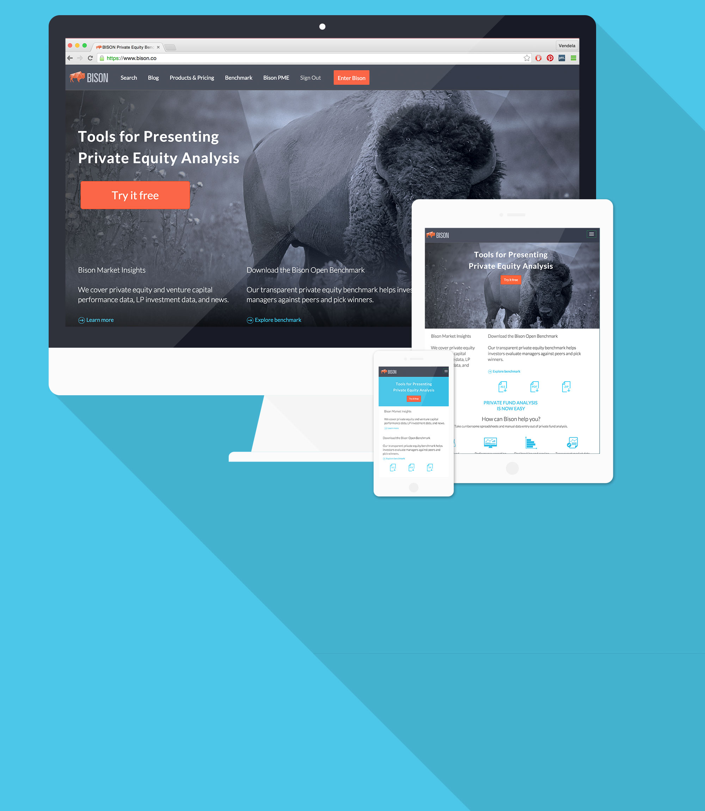
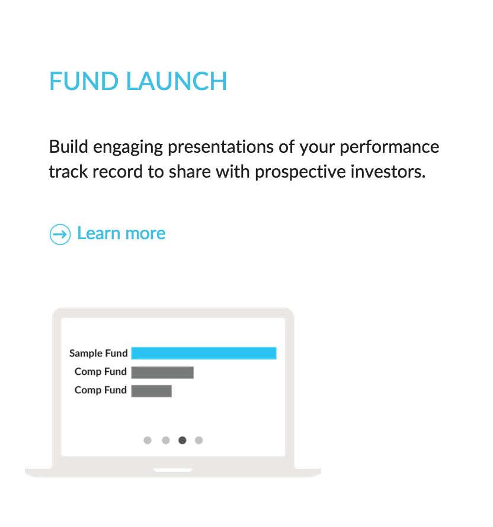
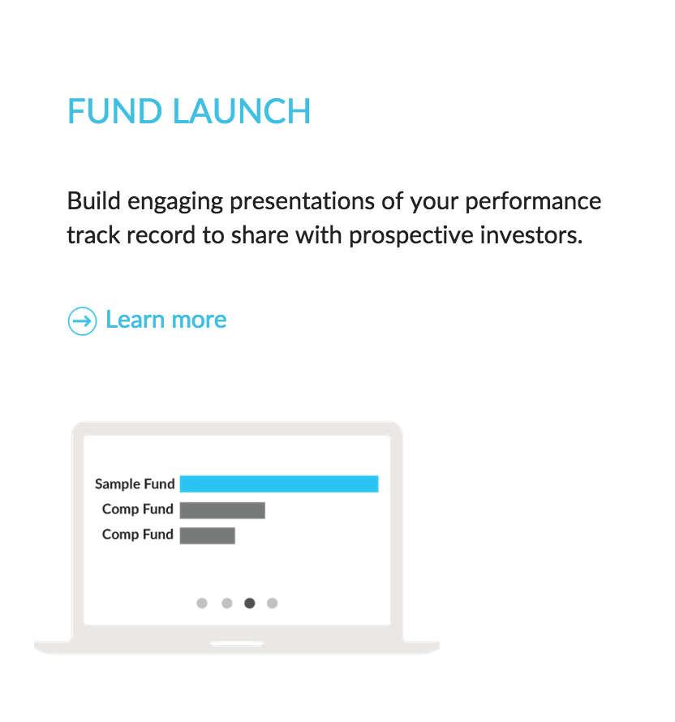

Bison Landing Page

The landing page at bison.co had been untouched for a while, and it became important for the company to ensure that people were getting the right information when they visited the page. There needed to be more marketing and thinking put into the page.
 With the guidance of CEO Dr. Rasmus Goksor, I designed and constructed a page that aims to answer key questions in each section; What is Bison? Why should I use Bison? How does Bison make my life easier? What are the products that Bison offers? and through this ended up with the current page.
With the guidance of CEO Dr. Rasmus Goksor, I designed and constructed a page that aims to answer key questions in each section; What is Bison? Why should I use Bison? How does Bison make my life easier? What are the products that Bison offers? and through this ended up with the current page.
 The details were important as well. The bison platform is a complicated array of graphs and data arranged in ways that are meant to be used and interpreted by members of the private equity field. For the landing page I wanted a simple way to represent the products without showing screenshots.

It was an important and teaching challenge to iterate through different ideas and methods of answering these questions while presenting to the CEO throughout the process and to the whole team once designs became more complete.
The details were important as well. The bison platform is a complicated array of graphs and data arranged in ways that are meant to be used and interpreted by members of the private equity field. For the landing page I wanted a simple way to represent the products without showing screenshots.

It was an important and teaching challenge to iterate through different ideas and methods of answering these questions while presenting to the CEO throughout the process and to the whole team once designs became more complete.